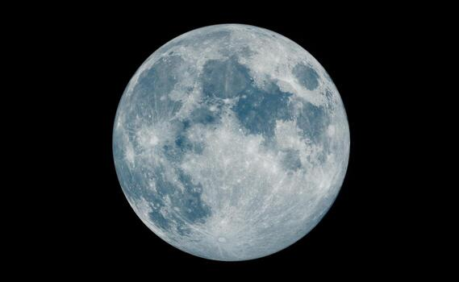
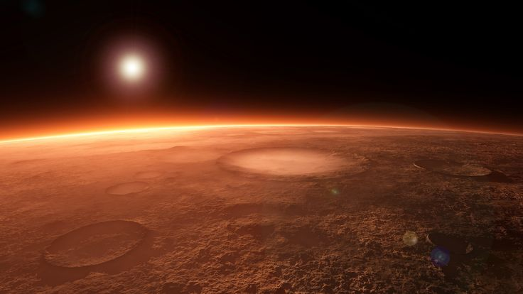
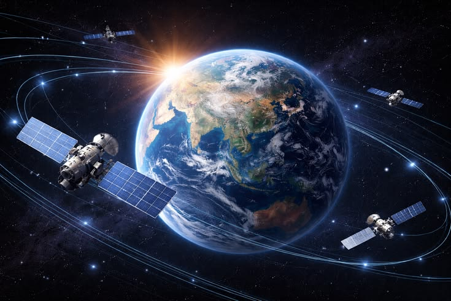

Explorando o universo através da Tecnologia
Um Olhar Além do Horizonte
A SpaceTech não nasceu em um laboratório isolado, mas de um questionamento compartilhado por um grupo de astrônomos e engenheiros: como tornar a imensidão do cosmos compreensível e próxima da experiência humana? Fundada com o propósito de democratizar o acesso ao conhecimento espacial, nossa trajetória é definida pela crença de que a tecnologia só cumpre seu papel quando serve para expandir os horizontes do pensamento.
O Fator Humano na Alta Tecnologia
Embora operemos com instrumentos de precisão e dados complexos, entendemos que cada descoberta astronômica ressoa, antes de tudo, na curiosidade humana. Na SpaceTech, priorizamos um ambiente de colaboração onde a ética e o desenvolvimento pessoal caminham lado a lado com a inovação técnica.
Nossa equipe não é composta apenas por especialistas, mas por entusiastas que dedicam suas vidas a traduzir o silêncio das estrelas em avanços tangíveis para a sociedade. Da implementação de observatórios remotos ao desenvolvimento de programas educacionais, cada projeto carrega o selo de nossa responsabilidade social e científica.
Construindo o Futuro, Respeitando o Legado
Ao longo dos anos, consolidamos nossa posição como referência no setor, enfrentando desafios técnicos com resiliência e transparência. Para nós, a exploração espacial é uma jornada contínua de aprendizado. Olhamos para o futuro com a ambição de quem deseja conquistar o espaço, mas com os pés firmemente plantados nos valores que nos trouxeram até aqui: integridade, excelência e o profundo respeito pelo mistério do universo.
SpaceTech Ciência para o amanhã, conexão para hoje.


Conheça mais sobre o planeta vermelho.
Confira a matéria